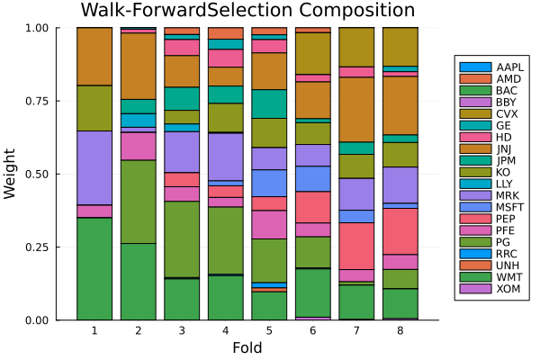

The source files can be found in examples/.
Time-dependent constraints
Every constraint we have used so far is static: it is fixed when the optimiser is constructed and applies unchanged to every optimisation. Under cross-validation, however, each fold is a separate optimisation over a different slice of time — and sometimes the constraint itself should change with time: a de-leveraging schedule that tightens position caps, a turnover budget relative to the previous rebalance, bounds that react to the volatility regime of the training window.
TimeDependent expresses exactly this. It wraps either a vector of per-fold values (a schedule) or a function of the fold's TimeDependentContext (a callable), and is stored directly in the optimiser field it varies — JuMPOptimiser(; wb = TimeDependent([...])). The field's position names what varies, so a field holds either a static value or a schedule, never both. This gives three ways to specify any input typed TD_Option:
- Static — set the field itself; the same value applies to every fold.
- Schedule-based —
TimeDependent([v₁, …, vₙ]); entryiis the complete field value for foldiof the consuming scheme'ssplitenumeration. - Callable —
TimeDependent(f);f(ctx)computes the value per fold on the fly.fcan be a bare function or aTimeDependentConstraintCallablefunctor struct.
Two rules govern the behaviour:
- Enumeration-order indexing, no hidden ranking: entry
imaps to foldiofsplit(cv, rd)— the machinery never re-orders folds behind your back. Walk-forward and (unshuffled) KFold enumerate chronologically, so there "fold time" is calendar time; for schemes whose enumeration is not a timeline it is your job to key entries off the fold's indices, which the context provides. - Inert outside fold loops: a plain
optimisecall has no folds, so the schedule simply does not participate — the affected fields run at their static defaults.
In this example we run the same portfolio problem under each cross-validation scheme — IndexWalkForward, KFold, CombinatorialCrossValidation and MultipleRandomised — and compare how the three methods behave in each.
using PortfolioOptimisers, PrettyTables# Format for pretty tables.resfmt = (v, i, j) -> begin if j == 1 return v else return isa(v, Number) ? "$(round(v*100, digits=2)) %" : v endend;1. Setting up
We use three years of daily data, a MeanRisk minimum-variance optimiser, and a short Clarabel fallback chain. The constraint we vary throughout is the per-asset weight cap (the wb field), because its effect is easy to read straight off the optimal weights.
using CSV, TimeSeries, DataFrames, Clarabel, Statistics, StableRNGsX = TimeArray(CSV.File(joinpath(@__DIR__, "..", "SP500.csv.gz")); timestamp = :Date)[(end - 252 * 3):end]# Compute the returns.rd = prices_to_returns(X)slv = [Solver(; name = :clarabel1, solver = Clarabel.Optimizer, settings = Dict("verbose" => false), check_sol = (; allow_local = true, allow_almost = true)), Solver(; name = :clarabel2, solver = Clarabel.Optimizer, settings = Dict("verbose" => false, "max_step_fraction" => 0.9), check_sol = (; allow_local = true, allow_almost = true))];# Static baseline: an uncapped minimum-variance optimiser.mr_static = MeanRisk(; opt = JuMPOptimiser(; slv = slv))# A helper that reads the largest weight of each fold's solution.max_weights(pred) = [maximum(p.res.w) for p in pred.pred];2. The three methods
2.1 Static
Nothing new here — a fixed cap of 20 % is just the wb field:
mr_capped = MeanRisk(; opt = JuMPOptimiser(; slv = slv, wb = WeightBounds(; lb = 0.0, ub = 0.2)))MeanRisk
opt ┼ JuMPOptimiser
│ pe ┼ EmpiricalPrior
│ │ ce ┼ PortfolioOptimisersCovariance
│ │ │ ce ┼ Covariance
│ │ │ │ me ┼ SimpleExpectedReturns
│ │ │ │ │ w ┴ nothing
│ │ │ │ ce ┼ GeneralCovariance
│ │ │ │ │ ce ┼ SimpleCovariance: SimpleCovariance(true)
│ │ │ │ │ w ┴ nothing
│ │ │ │ alg ┼ FullMoment()
│ │ │ │ w ┴ nothing
│ │ │ mp ┼ MatrixProcessing
│ │ │ │ pdm ┼ Posdef
│ │ │ │ │ alg ┼ UnionAll: NearestCorrelationMatrix.Newton
│ │ │ │ │ kwargs ┴ @NamedTuple{}: NamedTuple()
│ │ │ │ dn ┼ nothing
│ │ │ │ dt ┼ nothing
│ │ │ │ alg ┼ nothing
│ │ │ │ order ┴ NTuple{4, Symbol}: (:pdm, :dn, :dt, :alg)
│ │ me ┼ SimpleExpectedReturns
│ │ │ w ┴ nothing
│ │ horizon ┴ nothing
│ slv ┼ 2-element Vector{Solver}
│ │ Solver ⋯
│ │ Solver ⋯
│ wb ┼ WeightBounds
│ │ lb ┼ Float64: 0.0
│ │ ub ┴ Float64: 0.2
│ bgt ┼ Float64: 1.0
│ sbgt ┼ nothing
│ gbgt ┼ nothing
│ xbgt ┼ Bool: false
│ lt ┼ nothing
│ st ┼ nothing
│ lcse ┼ nothing
│ cte ┼ nothing
│ gcarde ┼ nothing
│ sgcarde ┼ nothing
│ smtx ┼ nothing
│ sgmtx ┼ nothing
│ slt ┼ nothing
│ sst ┼ nothing
│ sglt ┼ nothing
│ sgst ┼ nothing
│ tn ┼ nothing
│ fees ┼ nothing
│ sets ┼ nothing
│ tr ┼ nothing
│ ple ┼ nothing
│ ret ┼ ArithmeticReturn
│ │ settings ┼ JuMPReturnsSettings
│ │ │ scale ┼ Float64: 1.0
│ │ │ lb ┼ nothing
│ │ │ rte ┼ Bool: true
│ │ │ fee ┼ Bool: true
│ │ │ mic ┴ Bool: true
│ │ ucs ┼ nothing
│ │ mu ┴ nothing
│ sca ┼ SumScalariser()
│ ccnt ┼ nothing
│ cobj ┼ nothing
│ sc ┼ Int64: 1
│ so ┼ Int64: 1
│ ss ┼ nothing
│ card ┼ nothing
│ scard ┼ nothing
│ l2c ┼ nothing
│ lpc ┼ nothing
│ linfc ┼ nothing
│ l1 ┼ nothing
│ l2 ┼ nothing
│ lp ┼ nothing
│ linf ┼ nothing
│ brt ┼ Bool: false
│ x_src ┼ Symbol: :prior
│ z_src ┼ Symbol: :data
│ strict ┴ Bool: false
r ┼ Variance
│ settings ┼ RiskMeasureSettings
│ │ scale ┼ Float64: 1.0
│ │ ub ┼ nothing
│ │ rke ┴ Bool: true
│ sigma ┼ nothing
│ chol ┼ nothing
│ rc ┼ nothing
│ alg ┴ SquaredSOCRiskExpr()
obj ┼ MinimumRisk()
wi ┼ nothing
fb ┴ nothing
2.2 Schedule-based
A schedule is a vector of per-fold values; the field it sits in says what it varies, so there is nothing else to name — the same Threshold schedule means "long threshold" in lt and "short threshold" in st.
The schedule below is a de-leveraging plan: the cap tightens as we walk forward through time. We size it later, once we know how many folds the consuming cross-validation scheme produces — a schedule must have exactly one entry per fold, which is validated as soon as the scheme is split, before any fold runs.
function deleverage(n, bind = :outermost) return TimeDependent([WeightBounds(; lb = 0.0, ub = 0.35 - 0.15 * (i - 1) / max(n - 1, 1)) for i in 1:n], bind)end;2.3 Callable
A callable computes the value when the fold runs. It receives a TimeDependentContext carrying the fold's enumeration index i, the fold count n, the (possibly asset-viewed) returns data rd, the scheme's fold index vectors, and — only when previous weights are threaded — w_prev.
This one reproduces the same de-leveraging plan from the rank alone, so we can check that schedules and callables are two spellings of the same thing:
deleverage_fn = TimeDependent(ctx -> WeightBounds(; lb = 0.0, ub = 0.35 - 0.15 * (ctx.i - 1) / max(ctx.n - 1, 1)));And this one is genuinely dynamic — it reads the volatility of the fold's training window and tightens the cap in turbulent regimes. Note that it indexes ctx.train_idx with ctx.i; because i is the fold's position in the scheme's own enumeration, ctx.train_idx[ctx.i]/ctx.test_idx[ctx.i] are always the fold's own windows, under every scheme.
function vol_cap(ctx) Xtr = ctx.rd.X[ctx.train_idx[ctx.i], :] vol = std(Xtr * fill(1 / size(Xtr, 2), size(Xtr, 2))) * sqrt(252) # 35 % cap in calm regimes, tightening towards 15 % as annualised volatility rises. return WeightBounds(; lb = 0.0, ub = clamp(0.35 - vol, 0.15, 0.35))endvol_cap_td = TimeDependent(vol_cap);Callables need not be bare functions. A struct subtyping TimeDependentConstraintCallable — the constraint-value member of the TimeDependentCallable family — whose functor takes the context does the same job with two advantages: its parameters are inspectable data, and — being a type — a needs_previous_weights method can declare a previous-weights requirement directly, without the PreviousWeightsFunction wrapper.
Here is the de-leveraging plan once more, as a reusable parameterised type:
struct DeleverageCap <: PortfolioOptimisers.TimeDependentConstraintCallable hi::Float64 lo::Float64endfunction (c::DeleverageCap)(ctx::TimeDependentContext) return WeightBounds(; lb = 0.0, ub = c.hi - (c.hi - c.lo) * (ctx.i - 1) / max(ctx.n - 1, 1))enddeleverage_struct = TimeDependent(DeleverageCap(0.35, 0.2))TimeDependent
val ┼ Main.DeleverageCap
│ hi ┼ Float64: 0.35
│ lo ┴ Float64: 0.2
bind ┼ Symbol: :outermost
default ┴ NoDefault()
2.4 Validation happens as early as possible
Because the schedule lives in the field itself, a wrong target is an ordinary keyword error — there is no symbol to typo and no way to give a field both a static value and a schedule. What remains is entry validity: every schedule entry is test-substituted through the constructor, so a type-incompatible entry fails immediately:
try JuMPOptimiser(; slv = slv, card = TimeDependent([Threshold(; val = 0.01)]))catch err errendTypeError(Symbol("keyword argument"), :card, Union{Nothing, var"#s3485", var"#s1007"} where {var"#s1007"<:Integer, var"#s3485"<:TimeDependent}, Threshold
val ┴ Float64: 0.01
)try JuMPOptimiser(; slv = slv, card = TimeDependent([0]))catch err errendDomainError("0 < card must hold. Got\ncard => 0", "")2.5 Inert outside fold loops
A fold-less optimise has no time axis, so the schedule does not participate — the optimiser behaves exactly like the static baseline (the field runs at its static default):
mr_sched = MeanRisk(; opt = JuMPOptimiser(; slv = slv, wb = deleverage(4)))res_sched = optimise(mr_sched, rd)res_static = optimise(mr_static, rd)isapprox(res_sched.w, res_static.w)true3. Walk-forward
Walk-forward is the natural home of time-dependent constraints: folds are consecutive rebalances, so "fold time" is calendar time. We train on one year and test on the following quarter.
wf = IndexWalkForward(252, 63)n_wf = n_splits(wf, rd)8The schedule needs one entry per fold, so we size it with n_splits. All three estimators run through the same cross_val_predict call — the fold loop resolves any schedule into an ordinary static optimiser before each solve.
mr_wf_sched = MeanRisk(; opt = JuMPOptimiser(; slv = slv, wb = deleverage(n_wf)))mr_wf_fn = MeanRisk(; opt = JuMPOptimiser(; slv = slv, wb = deleverage_fn))mr_wf_vol = MeanRisk(; opt = JuMPOptimiser(; slv = slv, wb = vol_cap_td))pred_wf_static = cross_val_predict(mr_static, rd, wf)pred_wf_sched = cross_val_predict(mr_wf_sched, rd, wf)pred_wf_fn = cross_val_predict(mr_wf_fn, rd, wf)pred_wf_vol = cross_val_predict(mr_wf_vol, rd, wf)pretty_table(DataFrame(:fold => 1:n_wf, :static => max_weights(pred_wf_static), :schedule => max_weights(pred_wf_sched), :callable => max_weights(pred_wf_fn), :vol_callable => max_weights(pred_wf_vol)); formatters = [resfmt])┌───────┬─────────┬──────────┬──────────┬──────────────┐
│ fold │ static │ schedule │ callable │ vol_callable │
│ Int64 │ Float64 │ Float64 │ Float64 │ Float64 │
├───────┼─────────┼──────────┼──────────┼──────────────┤
│ 1 │ 39.87 % │ 35.0 % │ 35.0 % │ 15.0 % │
│ 2 │ 28.46 % │ 28.47 % │ 28.47 % │ 15.0 % │
│ 3 │ 26.02 % │ 26.02 % │ 26.02 % │ 20.37 % │
│ 4 │ 22.98 % │ 22.99 % │ 22.99 % │ 21.29 % │
│ 5 │ 14.99 % │ 14.99 % │ 14.99 % │ 14.99 % │
│ 6 │ 16.5 % │ 16.5 % │ 16.5 % │ 16.5 % │
│ 7 │ 30.3 % │ 22.14 % │ 22.14 % │ 18.01 % │
│ 8 │ 33.48 % │ 20.0 % │ 20.0 % │ 16.83 % │
└───────┴─────────┴──────────┴──────────┴──────────────┘The static column is free to concentrate; the schedule column respects the tightening cap fold by fold; the rank-based callable matches the schedule exactly (same rule, different spelling); and the volatility callable moves with the regime instead of the calendar.
The struct form is a third spelling of the same rule — its fold weights are identical to the function form's:
pred_wf_struct = cross_val_predict(MeanRisk(; opt = JuMPOptimiser(; slv = slv, wb = deleverage_struct)), rd, wf)all(isapprox(a.res.w, b.res.w) for (a, b) in zip(pred_wf_struct.pred, pred_wf_fn.pred))trueThe composition plot makes the de-leveraging visible — later folds are forced to spread weight across more assets:
using StatsPlots, GraphRecipesplot_composition(pred_wf_sched)
3.1 Previous weights
Schedules and callables are resolved before the previous-weights factory pass, so a per-fold turnover constraint swapped in by a schedule still receives the previous fold's weights. A callable can also read the previous weights directly, but because a bare function cannot be inspected, it must declare the requirement by wrapping itself in PreviousWeightsFunction — this is what flips needs_previous_weights and forces the fold loop to run sequentially (an undeclared callable would see w_prev === nothing).
Here each asset may move at most 2 percentage points per rebalance relative to its previous weight; fold 1 has no previous weights, so returning nothing leaves the turnover constraint off:
tn_budget = TimeDependent(PreviousWeightsFunction(ctx -> if isnothing(ctx.w_prev) nothing else Turnover(; w = ctx.w_prev, val = 0.02) end))mr_wf_tn = MeanRisk(; opt = JuMPOptimiser(; slv = slv, tn = tn_budget))pred_wf_tn = cross_val_predict(mr_wf_tn, rd, wf)# One-norm distance between consecutive folds, with and without the budget.function l1turnover(pred) return [sum(abs, pred.pred[i].res.w - pred.pred[i - 1].res.w) for i in 2:length(pred.pred)]endpretty_table(DataFrame(:rebalance => 2:n_wf, :static => l1turnover(pred_wf_static), :budgeted => l1turnover(pred_wf_tn)); formatters = [resfmt])┌ Info: Running cross-validation sequentially because the optimiser must use the previous optimisation's weights (needs_previous_weights(opt) == true). This is because somewhere within the optimisation estimator is contained at least one of the following:
│ - Turnover and/or TurnoverEstimator,
│ - WeightsTracking,
│ - TurnoverRiskMeasure,
│ - custom constraints which use asset weights,
│ - custom objective penalties which use asset weights,
│ - a time-dependent constraint whose entries need previous weights (e.g. a PreviousWeightsFunction).
└ To enable parallel processing please either mark the weights as fixed or remove the offending component(s). Time-dependent constraints alone do not force sequential processing.
┌───────────┬──────────┬──────────┐
│ rebalance │ static │ budgeted │
│ Int64 │ Float64 │ Float64 │
├───────────┼──────────┼──────────┤
│ 2 │ 102.85 % │ 12.0 % │
│ 3 │ 65.75 % │ 17.86 % │
│ 4 │ 28.51 % │ 21.12 % │
│ 5 │ 54.86 % │ 21.04 % │
│ 6 │ 56.26 % │ 19.86 % │
│ 7 │ 52.86 % │ 23.62 % │
│ 8 │ 19.77 % │ 20.63 % │
└───────────┴──────────┴──────────┘Note the informational message: it is the previous-weights requirement that forces sequential execution, not time dependence itself. Schedules and undeclared callables keep the fold loop fully parallel because entry i is known upfront.
4. KFold
KFold's folds are also time-ordered slices (shuffling is rejected for optimisation cross-validation), so schedules carry over unchanged — with one difference in interpretation: fold i tests on the i-th slice while training on the rest, so a schedule reads "the constraint in force while slice i is out of sample". Everything stays parallel.
kfold = KFold(; n = 4)mr_kf_sched = MeanRisk(; opt = JuMPOptimiser(; slv = slv, wb = deleverage(4)))pred_kf_static = cross_val_predict(mr_static, rd, kfold)pred_kf_sched = cross_val_predict(mr_kf_sched, rd, kfold)pred_kf_fn = cross_val_predict(MeanRisk(; opt = JuMPOptimiser(; slv = slv, wb = deleverage_fn)), rd, kfold)pretty_table(DataFrame(:fold => 1:4, :static => max_weights(pred_kf_static), :schedule => max_weights(pred_kf_sched), :callable => max_weights(pred_kf_fn)); formatters = [resfmt])┌───────┬─────────┬──────────┬──────────┐
│ fold │ static │ schedule │ callable │
│ Int64 │ Float64 │ Float64 │ Float64 │
├───────┼─────────┼──────────┼──────────┤
│ 1 │ 25.76 % │ 25.78 % │ 25.78 % │
│ 2 │ 32.87 % │ 30.0 % │ 30.0 % │
│ 3 │ 27.41 % │ 25.0 % │ 25.0 % │
│ 4 │ 35.8 % │ 20.0 % │ 20.0 % │
└───────┴─────────┴──────────┴──────────┘A mis-sized schedule fails at split time — before a single fold is solved — with the fold count the scheme actually produced:
try cross_val_predict(MeanRisk(; opt = JuMPOptimiser(; slv = slv, wb = deleverage(7))), rd, kfold)catch err errendDimensionMismatch("time-dependent entries for wb (7) must equal the number of folds (4)")5. Combinatorial
Under CombinatorialCrossValidation a fold is a train/test split, and each split's test set is a union of several disjoint time groups. Splits are enumerated combinatorially, so the enumeration is not a timeline — and the machinery deliberately does not invent one: any single "position in time" for a split whose test set is a union of disjoint groups would be an arbitrary hidden policy. Entry i simply belongs to split i of split(ccv, rd), which you can inspect; to key a constraint to time here, prefer a callable that reads its own windows (ctx.train_idx[ctx.i]/ctx.test_idx[ctx.i]) and derives whatever ordering your problem calls for.
ccv = CombinatorialCrossValidation(; n_folds = 4, n_test_folds = 2)n_ccv = n_splits(ccv)6With 4 groups choose 2 test groups we get 6 splits, so the schedule needs 6 entries — one per split, in split(ccv, rd)'s enumeration order. Because a split spans several time groups, "the constraint in force for this split" is inherently coarser in meaning than under walk-forward; the schedule below is kept to show the mechanics (entry i caps split i), and a genuinely time-keyed policy is better expressed as a callable deriving its value from its own windows.
mr_cc_sched = MeanRisk(; opt = JuMPOptimiser(; slv = slv, wb = deleverage(n_ccv)))pred_cc_static = cross_val_predict(mr_static, rd, ccv)pred_cc_sched = cross_val_predict(mr_cc_sched, rd, ccv)# Largest weight across each path's folds; paths recombine the splits, so the cap shows# up path by path.pretty_table(DataFrame(:path => 1:length(pred_cc_sched.pred), :static => [maximum(maximum(p.res.w) for p in path.pred) for path in pred_cc_static.pred], :schedule => [maximum(maximum(p.res.w) for p in path.pred) for path in pred_cc_sched.pred]); formatters = [resfmt])┌───────┬─────────┬──────────┐
│ path │ static │ schedule │
│ Int64 │ Float64 │ Float64 │
├───────┼─────────┼──────────┤
│ 1 │ 35.74 % │ 35.0 % │
│ 2 │ 37.0 % │ 28.64 % │
│ 3 │ 37.23 % │ 23.0 % │
└───────┴─────────┴──────────┘6. MultipleRandomised
MultipleRandomised crosses random asset subsets with a walk-forward over time, producing one path per subset. Two things happen to a schedule here:
ctx.iis the fold's position in the path's enumeration; predictions are re-sorted by test window afterwards, for reporting only — output order never influences which entry a fold received.- Each path sees a different asset universe: the optimiser is viewed down to the subset before the schedule is resolved, so schedule entries are sub-selected along with everything else, and callables see the viewed universe through
ctx.rd(itsnxare the subset's names).
A universe-aware callable is the natural fit — here the cap adapts to however many assets the path drew, allowing at most twice the equal weight:
mrand = MultipleRandomised(IndexWalkForward(252, 63); subset_size = 15, n_subsets = 3, rng = StableRNG(987654321), seed = 42)universe_cap = TimeDependent(ctx -> WeightBounds(; lb = 0.0, ub = 2.0 / length(ctx.rd.nx)))mr_mr_fn = MeanRisk(; opt = JuMPOptimiser(; slv = slv, wb = universe_cap))pred_mr_static = cross_val_predict(mr_static, rd, mrand)pred_mr_fn = cross_val_predict(mr_mr_fn, rd, mrand)pretty_table(DataFrame(:path => 1:length(pred_mr_fn.pred), :static => [maximum(maximum(p.res.w) for p in path.pred) for path in pred_mr_static.pred], :callable => [maximum(maximum(p.res.w) for p in path.pred) for path in pred_mr_fn.pred], :cap => fill(2.0 / 15, length(pred_mr_fn.pred))); formatters = [resfmt])┌───────┬─────────┬──────────┬─────────┐
│ path │ static │ callable │ cap │
│ Int64 │ Float64 │ Float64 │ Float64 │
├───────┼─────────┼──────────┼─────────┤
│ 1 │ 42.14 % │ 13.33 % │ 13.33 % │
│ 2 │ 40.0 % │ 13.33 % │ 13.33 % │
│ 3 │ 39.87 % │ 13.33 % │ 13.33 % │
└───────┴─────────┴──────────┴─────────┘Schedules work here too — sized to the folds per path (the walk-forward fold count), shared across paths:
n_mr = n_splits(IndexWalkForward(252, 63), rd)mr_mr_sched = MeanRisk(; opt = JuMPOptimiser(; slv = slv, wb = deleverage(n_mr)))pred_mr_sched = cross_val_predict(mr_mr_sched, rd, mrand)length(pred_mr_sched.pred)37. Nesting fold loops: who consumes the schedule?
Meta-optimisers like Stacking and NestedClustered run a cross-validation of their own to estimate inner out-of-sample returns. That means a schedule inside a meta can sit under two fold loops — the meta's inner one and, when the meta itself is backtested with cross_val_predict, an outer one. Which one consumes the schedule is chosen by its bind: the default :outermost means the outermost fold loop wins, while :nearest (§7.5) hands the schedule to the nearest enclosing loop instead. Either way the entries must be sized for whichever loop actually consumes them.
7.1 Outer CV, no inner CV
This is everything we have done so far: the backtest's fold loop resolves the schedule and each fold solves an ordinary static optimiser.
7.2 No outer CV, inner CV
Used standalone, a meta's inner cross-validation is the outermost (and only) fold loop, so it consumes the schedules of its inner estimators — sized to the inner scheme's folds. The meta's fold-less full-window inner solves run at the fields' static defaults, exactly like a plain optimise.
Here one of the stacked optimisers de-leverages across the inner KFold(4) folds used to build the out-of-sample returns fed to the outer optimiser:
st_inner = Stacking(; opti = [MeanRisk(; opt = JuMPOptimiser(; slv = slv, wb = deleverage(4))), mr_static], opto = mr_static, cv = OptimisationCrossValidation(; cv = KFold(; n = 4)))res_st_inner = optimise(st_inner, rd)maximum(res_st_inner.w)0.2727360333277324The same estimator with a mis-sized schedule fails at the inner split:
try optimise(Stacking(; opti = [MeanRisk(; opt = JuMPOptimiser(; slv = slv, wb = deleverage(7))), mr_static], opto = mr_static, cv = OptimisationCrossValidation(; cv = KFold(; n = 4))), rd)catch err errendDimensionMismatch("time-dependent entries for wb (7) must equal the number of folds (4)")7.3 Outer CV + inner CV
Backtesting that same meta puts an outer fold loop on top. Now the outer loop resolves every schedule — the meta's own fields and its inner estimators' — against the outer folds before the meta ever runs, so the inner KFold(4) only ever sees static estimators. The schedule therefore must be sized to the outer fold count, even though it lives next to an inner KFold(4):
st_nested = Stacking(; opti = [MeanRisk(; opt = JuMPOptimiser(; slv = slv, wb = deleverage(n_wf))), mr_static], opto = mr_static, cv = OptimisationCrossValidation(; cv = KFold(; n = 4)))pred_st_nested = cross_val_predict(st_nested, rd, wf)pretty_table(DataFrame(:fold => 1:n_wf, :stacked => max_weights(pred_st_nested)); formatters = [resfmt])┌───────┬─────────┐
│ fold │ stacked │
│ Int64 │ Float64 │
├───────┼─────────┤
│ 1 │ 35.0 % │
│ 2 │ 28.47 % │
│ 3 │ 26.02 % │
│ 4 │ 22.99 % │
│ 5 │ 14.99 % │
│ 6 │ 16.5 % │
│ 7 │ 23.72 % │
│ 8 │ 22.47 % │
└───────┴─────────┘And the inner-sized schedule from §7.2 now fails at the outer split — same estimator, different consumer:
try cross_val_predict(st_inner, rd, wf)catch err errendDimensionMismatch("time-dependent entries for wb (4) must equal the number of folds (8)")7.4 A hyperparameter-tuning pass over schedules
Because a schedule is just a field value, it is tunable like any other hyperparameter: GridSearchCrossValidation sets each candidate into the field through the estimator's validated constructor and scores it with its own cross-validation. Here we let the data pick between staying uncapped, the de-leveraging plan, and a gentler variant:
function gentler(n) return TimeDependent([WeightBounds(; lb = 0.0, ub = 0.45 - 0.1 * (i - 1) / max(n - 1, 1)) for i in 1:n])end;candidates = ["opt.wb" => [WeightBounds(), deleverage(n_wf), gentler(n_wf)]]gs = GridSearchCrossValidation(candidates; cv = wf)gs_res = search_cross_validation(mr_static, gs, rd)gs_res.idx1The winning candidate (gs_res.val_grid[gs_res.idx]) is whichever schedule scored best out of sample — the tuning pass consumes each candidate's entries through the search's own fold loop, so every candidate must be sized to n_splits(gs.cv, rd).
7.5 Binding to the inner loop with :nearest
Sometimes you want the opposite of §7.3: a schedule that belongs to a meta's inner cross-validation and should keep being consumed there even when the meta is backtested under an outer loop — an inner estimator whose regularisation follows the inner KFold(4), say, regardless of the outer horizon. Pass bind = :nearest (here through the deleverage helper's second argument). The outer loop then skips it and the inner loop resolves it, so it is sized to the inner folds even under an outer backtest:
st_bind_near = Stacking(; opti = [MeanRisk(; opt = JuMPOptimiser(; slv = slv, wb = deleverage(4, :nearest))), mr_static], opto = mr_static, cv = OptimisationCrossValidation(; cv = KFold(; n = 4)))pred_bind_near = cross_val_predict(st_bind_near, rd, wf)pretty_table(DataFrame(:fold => 1:n_wf, :nearest => max_weights(pred_bind_near)); formatters = [resfmt])┌───────┬─────────┐
│ fold │ nearest │
│ Int64 │ Float64 │
├───────┼─────────┤
│ 1 │ 39.87 % │
│ 2 │ 28.46 % │
│ 3 │ 26.02 % │
│ 4 │ 22.98 % │
│ 5 │ 14.99 % │
│ 6 │ 16.5 % │
│ 7 │ 30.3 % │
│ 8 │ 33.48 % │
└───────┴─────────┘The size-4 schedule that failed at the outer split in §7.3 now succeeds, because :nearest routes it past the outer loop to the inner KFold(4). The two binds compose freely: a meta's own wb can be :outermost (sized to the backtest) while an inner estimator's schedule is :nearest (sized to the inner scheme), each validated at its own split.
7.6 Per-fold vectors of constraints
An input that already accepts a vector of constraints varies over folds by holding a per-fold vector of vectors — entry i is fold i's whole constraint vector. Here the linear-constraint input lcse tightens from one cap in early folds to two in later ones:
sets = UniverseSets(; dict = Dict("nx" => rd.nx))cap_a = LinearConstraintEstimator(; val = "$(rd.nx[1]) <= 0.5")cap_b = LinearConstraintEstimator(; val = "$(rd.nx[2]) <= 0.5")lcse_sched = TimeDependent([i <= n_wf ÷ 2 ? [cap_a] : [cap_a, cap_b] for i in 1:n_wf])mr_lcse = MeanRisk(; opt = JuMPOptimiser(; slv = slv, sets = sets, lcse = lcse_sched))pred_lcse = cross_val_predict(mr_lcse, rd, wf)pretty_table(DataFrame(:fold => 1:n_wf, :vector_schedule => max_weights(pred_lcse)); formatters = [resfmt])┌───────┬─────────────────┐
│ fold │ vector_schedule │
│ Int64 │ Float64 │
├───────┼─────────────────┤
│ 1 │ 39.87 % │
│ 2 │ 28.44 % │
│ 3 │ 26.03 % │
│ 4 │ 22.99 % │
│ 5 │ 14.99 % │
│ 6 │ 16.5 % │
│ 7 │ 30.3 % │
│ 8 │ 33.46 % │
└───────┴─────────────────┘There is no separate "vector of schedules": to vary only some entries of a constraint vector, build the fold's vector inside a callable — TimeDependent(ctx -> [dynamic(ctx), a_static_constraint]) — which also keeps the shared static parts in one place.
8. Summary
| Method | Spelling | Sized/validated | Parallel? | Best for |
|---|---|---|---|---|
| Static | the field itself | at construction | yes | constraints that do not change |
| Schedule | field = TimeDependent([v₁, …, vₙ]) | each entry test-substituted at construction; length vs fold count at split time | yes | known calendars: de-leveraging plans, phased mandates, regime dates fixed in advance |
| Callable | field = TimeDependent(f) — a function, or a TimeDependentConstraintCallable struct that can declare previous-weights needs as a trait | output validated by the host constructor at each fold | yes, unless previous weights are declared (PreviousWeightsFunction wrapper or the struct's trait) | values computed from the fold: volatility regimes, universe size, previous weights |
Across schemes, the entry index always means the same thing — fold i of the consuming scheme's split enumeration, with ctx.train_idx[ctx.i]/ctx.test_idx[ctx.i] as the fold's own windows — and whatever the spelling, each fold ends up solving an ordinary static optimiser: the schedule is resolved through the host's validated constructor, so nothing downstream of the fold loop knows time dependence exists. For an input that accepts a vector of constraints, a schedule is a per-fold vector of vectors (§7.6). Meta-optimisers (NestedClustered, Stacking, SubsetResampling) accept schedules in their own problem-definition fields (wb/fees/pe/sets/wf, and their optimiser-valued fields) and forward the resolution into their inner estimators like any other wrapper. Which fold loop consumes a schedule is its bind: the default :outermost means an outer fold loop over a meta resolves an inner schedule against the outer folds (standalone, the meta's inner cross-validation consumes it instead), while :nearest (§7.5) keeps a meta's inner schedule bound to the inner cross-validation even under an outer backtest.
The rule deciding which inputs accept schedules is problem definition varies, execution control does not: anything stating what is solved (priors, constraints, risk measures, objectives, asset sets, fallbacks) may change per fold; anything stating how (solvers, random number generators, a meta's own cross-validation scheme) stays static. That includes the optimiser itself — a schedule of whole optimisers can be handed to cross_val_predict directly or held in optimiser-valued fields, which is the subject of Time Dependent Optimisers.
This page was generated using Literate.jl.